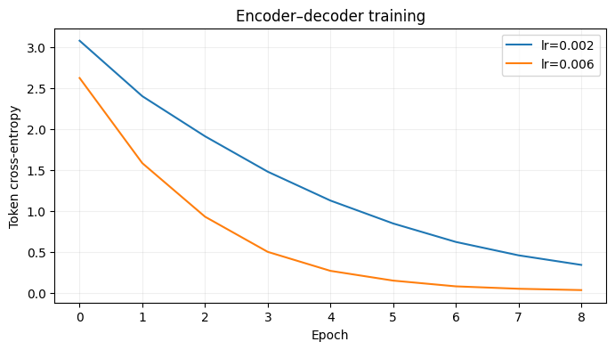

import numpy as np
import pandas as pd
import matplotlib.pyplot as plt
from sklearn.model_selection import train_test_split
SEED = 42
rng = np.random.default_rng(SEED)
plt.rcParams.update({'figure.figsize': (8, 4), 'axes.grid': True, 'grid.alpha': 0.2})Project 05 · Transformer from Scratch: Search Query Correction
Track: Transformers
Research / product question: Can a small encoder–decoder learn to correct misspelled shopping queries?
Learning outcome: Implement character tokenization, Q/K/V attention, masked decoder, teacher forcing, greedy decoding and edit-error metrics.
Workflow: Data-generating process → raw-data audit → leakage-safe features → from-scratch baseline → model selection / hyperparameter tuning → held-out evaluation → failure analysis.
Synthetic-data disclosure: All records and outcomes are created in this notebook; they do not describe real customers or credit decisions. Ground truth is constructed for teaching. Numerical results are illustrative of this simulator, not estimates of real-world business impact.
Reproducibility: Random seeds are fixed. Run cells top-to-bottom. Install packages from the project-level requirements.txt. CPU execution is supported; deep-learning examples deliberately use small models.
Portfolio standard: fully reproducible, synthetic educational data · explicit evaluation protocol · plots and failure analysis · no claims of production accuracy.
This character-level encoder–decoder is trained from random initialization, with attention and greedy autoregressive inference. Teacher-forced accuracy is not the same as exact correctness of free-running outputs.
1. Simulate paired typo / corrected queries
Our supervised target is a canonical product-search query. We generate deletions, substitutions and adjacent swaps. We split by query examples, and discuss the template limitation at the end.
# Generate typos and correct queries deterministically for reproducibility.
import torch, re
from torch import nn
torch.manual_seed(42);torch.set_num_threads(2)
products=['wireless headphones','bluetooth speaker','gaming laptop','running shoes','coffee grinder','phone charger','camera lens','smart watch','noise cancelling earbuds','laptop stand','mechanical keyboard','portable monitor','electric toothbrush','robot vacuum','usb cable']
modifiers=['best','cheap','premium','compact','lightweight','new','fast','black','small']
canonical=[f'{m} {p}' for p in products for m in modifiers]
def typo(text,r):
s=list(text);nchanges=int(r.choice([1,1,1,2]))
for _ in range(nchanges):
ix=int(r.integers(0,len(s)))
if s[ix]==' ':continue
operation=r.choice(['sub','delete','swap'])
if operation=='sub':s[ix]=str(r.choice(list('abcdefghijklmnopqrstuvwxyz')))
elif operation=='delete' and len(s)>5:s.pop(ix)
elif ix+1<len(s) and s[ix+1]!=' ':s[ix],s[ix+1]=s[ix+1],s[ix]
return ''.join(s)
pairs=[(typo(t,rng),t) for t in canonical for _ in range(9)]
rng.shuffle(pairs)
train_pairs,rest=train_test_split(pairs,test_size=.28,random_state=42);valid_pairs,test_pairs=train_test_split(rest,test_size=.5,random_state=42)
print('Train/valid/test',len(train_pairs),len(valid_pairs),len(test_pairs));print('Examples:',pairs[:4])Train/valid/test 874 170 171
Examples: [('black wireless hadphones', 'black wireless headphones'), ('small portble monitor', 'small portable monitor'), ('fast lapto stand', 'fast laptop stand'), ('cheap noisy cancelling earbuds', 'cheap noise cancelling earbuds')]2. Build the character tokenizer and padding masks
BOS starts decoder inputs; EOS ends outputs; PAD is ignored by the loss. For a target hello, the decoder receives BOS hello, and predicts hello EOS one token at a time.
# Build a character vocabulary including BOS/EOS/PAD sentinels.
chars=sorted(set(''.join(a+b for a,b in pairs)));special=['<PAD>','<BOS>','<EOS>','<UNK>'];stoi={ch:i for i,ch in enumerate(special+chars)};itos={v:k for k,v in stoi.items()}
PAD,BOS,EOS,UNK=range(4);maxlen=31
def encode_text(s):return [stoi.get(ch,UNK) for ch in s[:maxlen-2]]+[EOS]
def pad_list(seqs):
m=max(len(s) for s in seqs);return torch.tensor([s+[PAD]*(m-len(s)) for s in seqs],dtype=torch.long)
def batch_from(pairs):
src=pad_list([encode_text(a) for a,b in pairs]);tg=[encode_text(b) for a,b in pairs]
return src,pad_list([[BOS]+s[:-1] for s in tg]),pad_list(tg)
print('Vocabulary size',len(stoi),'sample encoded:',batch_from(train_pairs[:3])[0].shape)Vocabulary size 31 sample encoded: torch.Size([3, 25])3. Implement attention and encoder/decoder blocks
Every attention head computes softmax(QKᵀ / sqrt(d_head)) V. The decoder masks future target positions. Cross-attention reads all encoder positions. No pretrained weights are used.
# The encoder-decoder uses trainable embeddings and hand-authored attention.
class Attention(nn.Module):
def __init__(self,d,heads=2):
super().__init__();self.h=heads;self.dk=d//heads;assert d%heads==0
self.q=nn.Linear(d,d);self.k=nn.Linear(d,d);self.v=nn.Linear(d,d);self.o=nn.Linear(d,d)
def forward(self,x,memory=None,causal=False,key_padding=None):
source=x if memory is None else memory
def split(z):return z.reshape(z.shape[0],z.shape[1],self.h,self.dk).transpose(1,2)
q,k,v=split(self.q(x)),split(self.k(source)),split(self.v(source))
scores=q@k.transpose(-2,-1)/np.sqrt(self.dk)
if causal:
mask=torch.triu(torch.ones(scores.shape[-2:],device=x.device,dtype=torch.bool),diagonal=1)
scores=scores.masked_fill(mask,-1e4)
if key_padding is not None:scores=scores.masked_fill(key_padding[:,None,None,:],-1e4)
z=torch.softmax(scores,dim=-1)@v
return self.o(z.transpose(1,2).contiguous().reshape(x.shape[0],x.shape[1],-1))
class Block(nn.Module):
def __init__(self,d,decoder=False):
super().__init__();self.decoder=decoder;self.self_attn=Attention(d)
if decoder:self.cross=Attention(d);self.lnc=nn.LayerNorm(d)
self.ln1=nn.LayerNorm(d);self.ln2=nn.LayerNorm(d);self.ff=nn.Sequential(nn.Linear(d,4*d),nn.ReLU(),nn.Linear(4*d,d))
def forward(self,x,mem=None,source_pad=None,target_pad=None):
x=x+self.self_attn(self.ln1(x),causal=self.decoder,key_padding=target_pad)
if self.decoder:x=x+self.cross(self.lnc(x),memory=mem,key_padding=source_pad)
return x+self.ff(self.ln2(x))
class TinySeq2Seq(nn.Module):
def __init__(self,vocab,dim=32):
super().__init__();self.emb=nn.Embedding(vocab,dim,padding_idx=PAD);self.pos=nn.Embedding(maxlen+2,dim)
self.encoder=Block(dim);self.decoder=Block(dim,decoder=True);self.out=nn.Linear(dim,vocab)
def embed(self,x):return self.emb(x)+self.pos(torch.arange(x.shape[1],device=x.device))[None,:,:]
def forward(self,src,tgt):
sp=(src==PAD);tp=(tgt==PAD);memory=self.encoder(self.embed(src),source_pad=sp,target_pad=sp)
return self.out(self.decoder(self.embed(tgt),mem=memory,source_pad=sp,target_pad=tp))
# Shape test before training.
tmp=TinySeq2Seq(len(stoi));ss,tt,yy=batch_from(train_pairs[:4]);assert tmp(ss,tt).shape==(4,tt.shape[1],len(stoi))
print('Parameters:',sum(p.numel() for p in tmp.parameters()))Parameters: 327674. Hyperparameter tuning on held-out validation pairs
We tune only learning rate. Character accuracy is not the same as exact-query accuracy; the model can miss one character and fail exact match. This CPU teaching run is deliberately small.
# Tune using validation labels, not held-out target sequences.
def train_model(lr,epochs=9):
torch.manual_seed(42);m=TinySeq2Seq(len(stoi));opt=torch.optim.AdamW(m.parameters(),lr=lr);trace=[]
for ep in range(epochs):
order=np.random.default_rng(ep+123).permutation(len(train_pairs));losses=[]
m.train()
for batchids in np.array_split(order,int(np.ceil(len(order)/48))):
src,dec,y=batch_from([train_pairs[i] for i in batchids]);logits=m(src,dec)
loss=nn.functional.cross_entropy(logits.reshape(-1,len(stoi)),y.reshape(-1),ignore_index=PAD)
opt.zero_grad();loss.backward();nn.utils.clip_grad_norm_(m.parameters(),1.);opt.step();losses.append(loss.item())
trace.append(float(np.mean(losses)))
return m,trace
def teacher_accuracy(m,pair_list):
m.eval();src,dec,y=batch_from(pair_list)
with torch.no_grad():pred=m(src,dec).argmax(-1)
mask=y!=PAD;return ((pred==y)&mask).sum().item()/mask.sum().item()
runs={}
for lr in [0.002,0.006]:
m,hist=train_model(lr);runs[lr]=(m,hist,teacher_accuracy(m,valid_pairs[:160]))
print('Validation teacher-forced character accuracy:',{lr:round(v[2],3) for lr,v in runs.items()})
chosen=max(runs,key=lambda lr:runs[lr][2]);model,loss_curve,_=runs[chosen]
for lr,(m,h,acc) in runs.items():plt.plot(h,label=f'lr={lr}')
plt.legend();plt.xlabel('Epoch');plt.ylabel('Token cross-entropy');plt.title('Encoder–decoder training');plt.show()Validation teacher-forced character accuracy: {0.002: 0.885, 0.006: 0.967}
5. Autoregressive inference and final evaluation
At inference, the correct next character is NOT provided. The decoder greedily generates its own previous predictions. This is the more honest evaluation than teacher-forced accuracy.
# Greedy decoding provides a realistic free-running test.
def correct(m,words):
m.eval();src=pad_list([encode_text(w) for w in words]);generated=torch.full((len(words),1),BOS,dtype=torch.long)
with torch.no_grad():
for _ in range(maxlen-1):
next_id=m(src,generated)[:,-1,:].argmax(-1,keepdim=True)
generated=torch.cat([generated,next_id],dim=1)
answers=[]
for ids in generated[:,1:].tolist():
out=[]
for i in ids:
if i==EOS:break
if i>=len(special):out.append(itos[i])
answers.append(''.join(out))
return answers
subset=test_pairs[:48];preds=correct(model,[p[0] for p in subset]);accuracy=np.mean([p==gold for p,(_,gold) in zip(preds,subset)])
print('Held-out greedy exact match:',round(accuracy,3))
for (bad,truth),guess in list(zip(subset,preds))[:8]:print(f'{bad!r:31} -> {guess!r:31} | target {truth!r}')Held-out greedy exact match: 0.667
'small dunning shoes' -> 'small noise g shoes' | target 'small running shoes'
'small portalbe monitor' -> 'small portable monitor' | target 'small portable monitor'
'best wirelses headphones' -> 'best wireless headphones' | target 'best wireless headphones'
'new wirelejs headphones' -> 'new wirelenssheadphones' | target 'new wireless headphones'
'cheap portzble monitor' -> 'cheap porte p' | target 'cheap portable monitor'
'best lectric toothbrush' -> 'best electric toothbrush' | target 'best electric toothbrush'
'small portable monitor' -> 'small portable monitor' | target 'small portable monitor'
'comyact gamng laptop' -> 'compact gaming laptop' | target 'compact gaming laptop'What the results mean / interview discussion
A compact encoder–decoder demonstrates Q/K/V, causal masking and teacher forcing. Query correction is harder than copying clean text; a tiny model trained on a narrow synthetic corpus may underperform a dictionary/edit-distance baseline. Results should be framed as a learning experiment, not production-grade spell correction.
Try explaining these without looking at the code:
- What differs between encoder self-attention, decoder causal attention and cross-attention?
- Why can teacher-forced accuracy look better than free-running exact match?
- How would you measure correction impact on search NDCG instead of only spelling?
Limitations and next step: Evaluate on a suitably licensed real-world dataset or stronger simulation with domain shift, logging bias and realistic selection. Never treat synthetic performance as production evidence.
What this project demonstrates, and what it does not
Next: break down accuracy by typo type, include unknown brands, increase source length, use beam search and compare latency against edit distance and a dictionary model.
Reproduce: Run All in Jupyter; no private or uploaded data required. For real data, use leakage-safe train/validation/test partitions and respect each dataset license.
# Show both sequence accuracy and the kinds of mistakes the model makes.
examples = pd.DataFrame({"noisy_query": [r[0] for r in test_pairs],
"expected": [r[1] for r in test_pairs],
"predicted": correct(model, [r[0] for r in test_pairs])})
examples["exact_match"] = examples.expected == examples.predicted
print("Exact match on truly held-out queries:", round(examples.exact_match.mean(), 3))
print(examples.loc[~examples.exact_match].head(8).to_string(index=False))Exact match on truly held-out queries: 0.579
noisy_query expected predicted exact_match
small dunning shoes small running shoes small noise g shoes False
new wirelejs headphones new wireless headphones new wirelenssheadphones False
cheap portzble monitor cheap portable monitor cheap porte p False
cheap nnise cancelling earbuds cheap noise cancelling earbuds cheap nnine cancelling eardsb False
compact electric oothbrush compact electric toothbrush compact electric thboooothble False
new electric toothbruh new electric toothbrush new electric toooothbrushbr False
premiuz noise cancelling earbuds premium noise cancelling earbuds premium noise cancelling earb False
new usb cbe new usb cable nest unoerunoe cundbbeeab r FalseWhy free-running evaluation matters: Training with teacher forcing feeds the true previous character to the decoder. During inference, the model must use its own predictions, and small mistakes can compound across tokens.